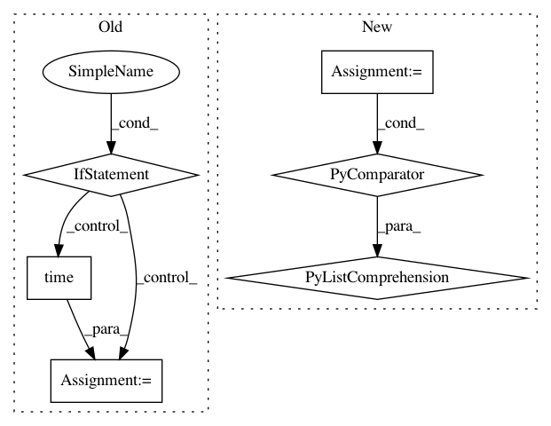

0d5eb96adeb12ecc2c2a1fd4554cc6a01c5c5b98,apps/search/models.py,MUserSearch,index_subscriptions_for_search,#MUserSearch#,48
Before Change
processed += 1
// Throttle notifications to client as to not flood them
if time.time() - throttle > 0.05:
r.publish(user.username, "search_index_complete:%.4s" % (float(processed)/total))
throttle = time.time()
duration = time.time() - start
logging.user(user, "~FCIndexed ~SB%s/%s feeds~SN for ~SB~FB%s~FC~SN in ~FM~SB%s~FC~SN sec." %
(processed, total, user.username, round(duration, 2)))
r.publish(user.username, "search_index_complete:done")
After Change
except Feed.DoesNotExist:
continue
feed_id_chunks = [c for c in chunks(feed_ids, 6)]
logging.user(user, "~FCIndexing ~SB%s feeds~SN in %s chunks..." %
(total, len(feed_id_chunks)))
tasks = [IndexSubscriptionsChunkForSearch().s(feed_ids=feed_id_chunk,
user_id=self.user_id
).set(queue="search_indexer")
for feed_id_chunk in feed_id_chunks]
group = celery.group(*tasks)
res = group.apply_async(queue="search_indexer")
res.join_native()
In pattern: SUPERPATTERN
Frequency: 3
Non-data size: 6
Instances
Project Name: samuelclay/NewsBlur
Commit Name: 0d5eb96adeb12ecc2c2a1fd4554cc6a01c5c5b98
Time: 2014-04-22
Author: samuel@ofbrooklyn.com
File Name: apps/search/models.py
Class Name: MUserSearch
Method Name: index_subscriptions_for_search
Project Name: GoogleCloudPlatform/PerfKitBenchmarker
Commit Name: 9d35976700b9db72995fabdbf59a0719e53bc4bd
Time: 2019-11-06
Author: pclay@google.com
File Name: perfkitbenchmarker/windows_virtual_machine.py
Class Name: WindowsMixin
Method Name: WaitForBootCompletion
Project Name: pantsbuild/pants
Commit Name: 937907d721b8e4e9628b6d13bb59423e4406a5f1
Time: 2015-04-20
Author: itay@twitter.com
File Name: src/python/pants/backend/python/tasks/pytest_run.py
Class Name: PytestRun
Method Name: _do_run_tests